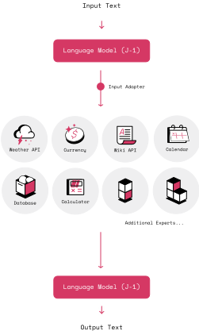
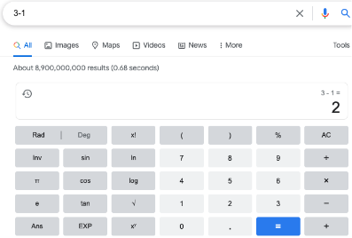
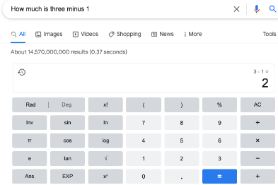

MRKL 系统：一种结合大语言模型、外部知识源与离散推理的模块化神经符号架构
论文指出 LLM 虽是通用的语言与知识入口，但存在固有缺陷：缺乏最新与专有知识、不擅长算术等离散推理、不知道当前日期，而为每类任务微调大模型又会带来 model explosion 问题。为此提出 MRKL 架构：由可扩展的'专家'模块（神经模型、计算器、数据库、API 等符号模块）和一个作为专用神经网络的 router 组成，router 把每条自然语言输入分给最合适的模块，模块输出还可继续路由给其他模块。核心挑战是'跨越神经-符号鸿沟'——从文本中可靠抽取符号模块所需的离散参数。作者以计算器为测试用例，用结构化模板做数据增强，对 J1-large（7B）做 prompt-tuning，使参数抽取在位数、数字/文字、问句格式、运算类型与数量等维度高度泛化，多数设置接近 100% 准确率，而 few-shot 方式被证明明显不足。结论：让 LM 只负责理解与抽取参数、把计算交给确定性符号模块，可达到生产级可靠性。
LLM 输出经常出错：它们无法访问全部相关知识（如最新/专有信息）、不擅长算术等离散计算、不知道当前日期、连简单数学推理都困难；同时传统'针对每类任务微调大模型'的部署方式存在 model explosion 问题、不可扩展。论文要回答：如何既保留自监督大语言模型的优势，又通过系统架构设计规避这些固有缺陷。
提出 MRKL（Modular Reasoning, Knowledge and Language）模块化神经符号架构：一个可扩展的'专家'模块集合（神经模块与计算器、数据库、API 调用等符号/离散模块）加一个 router（专用神经网络），router 将每条自然语言输入路由到最能响应的模块，模块输出可作为最终答案或继续路由给其他模块。关键技术挑战是'跨越神经-符号鸿沟'：神经侧调用符号模块时必须从文本中抽取离散参数。以算术为测试用例：基于结构化示例空间的模板做数据增强，用 J1-large（7B）+ prompt-tuning（10 个 prompt tokens，lr=0.3）训练 router 可靠抽取运算与操作数，并在操作数位数、数字/文字表示、问句格式、运算类型、运算数量等维度系统评测泛化性，且严格保证训练/测试无重叠。
通过基于结构化示例空间的数据增强，静态预训练 LM 的算术参数抽取可达到 near perfect performance
仅用个位数操作数训练即可泛化到 1-9 位数字的加法与乘法测试；对比之下 GPT-3 式纯 LM 方法随位数增加性能急剧下降（dramatic decrease）
数字/文字表示：同分布（训练与测试同类型）准确率接近 100%；文字训练→数字测试泛化良好，反向（数字→文字）性能明显更低
跨问句格式：仅用 format 0 训练，对多数格式泛化完美（perfect in most cases）；唯一非问句形式的 format 4 最难泛化
跨运算：同运算训练/测试准确率 > 0.99；加法训练对减法、乘法几乎完美泛化；除法是例外，其他运算训练的模型对除法泛化差
两运算问题：29 种组合中 22 种准确率超过 90%；单运算训练泛化到两运算时，仅 add-mul、sub-mul、sub-div 三种失败
Appendix 对比：few-shot 在操作数写成文字时性能随位数大幅下降、跨格式泛化也明显更低；prompt-tuning 则保持接近完美性能
区别于两条已有路线：(1) 把多任务能力都压进单个微调大模型——作者称 MRKL 相比 fine-tuned multi-task models 有重要优势，并以避免 model explosion 为目标；(2) 依赖 LM 从预训练数据中'内化'算术等能力（以 GPT-3 为代表）——MRKL 把这类计算显式交给符号模块，LM 只负责抽取参数。论文还给出了一套针对神经→符号接口参数抽取的系统性数据增强与多维泛化评测方法，而非仅依赖 few-shot 提示。
相关度级别：high
命中能力域：3.3 Agent 架构与工具使用 | 3.5 评测与可靠使用 | 3.2 提示工程
理由：MRKL 是'LLM + 外部工具/知识模块 + 路由'架构的早期系统化表述，直接命中 3.3 的工具调用与 Agent harness 设计：'router + 可扩展专家模块'的组织方式，以及'神经侧只负责理解并抽取符号模块所需离散参数、计算交给确定性模块'的接口分工原则，正是今天 function calling/工具调用要解决的核心问题，对团队设计代码/测试/知识库 Agent 的工具层有直接参考价值。其对参数抽取在位数、措辞、格式、运算类型及 OOD 上的系统性泛化评测，是 3.5 关注的生产级可靠性评测范例，可迁移为团队工具调用上线前的验收方法。Appendix 的 few-shot vs prompt-tuning 对比与 3.2 相关，提示高可靠性工具调用场景不能只靠 few-shot 提示；但 prompt-tuning 需要训练，团队不训练模型，需以其他手段弥补。论文中'外部知识源'模块仅架构性提及，未展开检索与上下文组织细节，故不计入 3.1。
建议动作：深入精读并做内部分享
arXiv:2205.00445v1 [cs.CL] 2022年5月1日
超大规模语言模型（Language Models, LMs）为人工智能（AI）开启了一个新时代，成为通往基于自然语言的知识任务的门户。尽管语言模型是现代人工智能不可或缺的组成部分，但它们在诸多方面也存在固有的局限性。我们讨论了这些局限性，以及如何通过采用系统化的方法来规避它们。我们将这一挑战概念化为一个除语言处理之外还涉及知识与推理的问题，并定义了一种由多个神经模型构成、辅以离散知识与推理模块的灵活架构。我们描述了这一神经符号（neuro-symbolic）架构——即模块化推理、知识与语言（Modular Reasoning, Knowledge and Language, MRKL，发音为 "miracle"）系统，介绍了实现该系统所面临的一些技术挑战，以及 AI21 Labs 的 MRKL 系统实现 Jurassic-X。
超大语言模型（LM），例如 BERT [1]、GPT-3 [2]、Jurassic-1 [3]、PaLM [4] 以及其他模型 [5-9]，已经席卷了人工智能（AI）领域，它们有望成为众多应用的多功能、通用基础。事实上，部分正是出于这一原因，一些人将其重新命名为“基础模型”（foundation models）[10]。这一术语的含义较为宽泛，既涵盖语言模型，也涵盖训练数据不止于文本的模型；尽管此类多模态模型并非本文的重点，但还有另一个原因让我们需要对“语言模型”这一术语持保留态度。虽然 LM 确实对句法及其他语言要素进行了建模，但它们最引人注目的特征在于：它们对训练数据所描述的世界进行了建模。
一种结合大语言模型、外部知识源与离散推理的模块化神经符号架构
Ehud Karpas, Omri Abend, Yonatan Belinkov, Barak Lenz, Opher Lieber, Nir Ratner, Yoav Shoham, Hofit Bata, Yoav Levine, Kevin Leyton-Brown, Dor Muhlgay, Noam Rozen, Erez Schwartz, Gal Shachaf, Shai Shalev-Shwartz, Amnon Shashua, Moshe Tenenholtz
AI21 Labs
2022年5月3日
因此，LM 实际上充当了通往知识宇宙的文本门户 [11, 12]，或许更应该被称为“语言与知识”模型。
从这一视角来看，可以清楚地看到，尽管 LM 颇具价值，但当前的 LM 存在固有的局限性。尽管功能多样、令人印象深刻，即便是超大规模的 LM，其输出在许多情况下也是错误的，而且往往错得离谱 [13]。下面是 GPT-3 在一些简单查询上的示例输出。（需要说明的是，这并非专门针对 GPT-3 的批评，其他 LM——包括我们自己的 Jurassic-1——也表现出类似的荒谬之处。）
例如，LM 可能难以理解美国没有人口超过 2000 万的城市，难以理解数学教师是一个人，不知道今天的日期是什么，也无法进行哪怕简单的（例如数学方面的）推理。
当你探寻根本原因时，会发现 LM 的核心局限在于：它们无法获取所有相关知识，而且神经模型不适合某些类型的计算。更具体地说：
除了这些不足之外，部署 LM 的传统方法还存在另一个固有问题：
尽管存在所有这些不足，大语言模型仍是任何未来 AI 系统不可或缺的骨干。因此问题在于如何鱼与熊掌兼得——既享受自监督深度语言模型带来的好处，又不受这些缺陷之苦。我们提出的解决方案是一种灵活的架构，称为模块化推理、知识与语言（Modular Reasoning, Knowledge and Language，MRKL，发音同英文单词 "miracle"）系统，其高层设计如下图所示。

因此，MRKL 系统由一组可扩展的模块（我们称之为“专家”）和一个路由器组成，路由器将每一条输入的自然语言路由到最能响应该输入的模块（该模块的输出可以作为 MRKL 系统的输出，也可以被路由到另一个模块）。这些模块可以是：
与经过微调的多任务模型相比，MRKL 系统享有若干重要优势：
我们已经实现了一个名为 Jurassic-X 的 MRKL 系统，目前正由少数合作伙伴进行试点。
Jurassic-X 很快将向开发者开放；您可以在此处申请抢先体验。
与此同时，您可以通过一个演示（链接）来体验 Jurassic-X。
当然，实现 MRKL 系统涉及许多细节。关于如何避免模型爆炸（model explosion），请参见我们在此处的详细讨论。此外还有一个有趣的挑战，即如何在各模块之间智能地路由输入，我们将把这一问题留待另行讨论。这里我们讨论其中一个特别有趣的挑战：如何从文本中提取供符号推理器（symbolic reasoners）使用的形式化参数。
神经方法与符号方法在人工智能（AI）中的关系，注定会引发关于二者相对优劣的激烈讨论：一端是神经怀疑论者（neuro-skeptics），另一端是神经死硬派（neuro-diehards），而其余的人则试图进行理性的对话。在讨论我们的技术方案之前，我们想先阐明我们的指导思想。我们相信神经语言模型（LM）是必不可少的；我们构建 Jurassic-1 [3] 并非毫无缘由，它既是我们自身应用的骨干，也是使用 AI21 Studio 的开发者们应用的骨干。但正如我们已经明确指出的，我们也相信它们存在固有的缺陷。对于哪些类型的计算最适合交给神经机制处理、哪些应当划归给符号方法，我们不持坚定立场。这无疑将是一个不断演进的过程。我们坚定相信的是：某些任务应当由离散方法来处理，并且我们应当拥有一套清晰的方法论，来说明如何将计算从神经网络移交给符号过程。
用语言描述一个需要执行算术运算的情境，有很多种方式。最直接的方式是使用数学符号，例如 "3 - 1 =?"。Google 搜索对此处理得很好：
一旦路由器（router）做出了调用哪个模块的决策，它就需要将正确的信息传递给该模块。路由器是一个专用的神经网络，因此调用神经模块很容易，因为神经到神经的接口是自然的。然而，当神经网络需要访问数据库、发起 API 调用或调用另一个符号计算时，它必须从文本中提取该模块所需的离散参数。这里要传达的主要信息是：天下没有免费的午餐，但这顿午餐在许多情况下是负担得起的。代价在于训练路由器可靠地提取参数，而这必须严格地进行。我们将通过讨论如何训练 Jurassic-X 提取基本算术运算来阐明这一观点。


但接下来事情就变得棘手了。在词汇层面，人们可能使用承载相同含义的不同同义词：（"twelve"、"12" 和 "a dozen"）。但除了简单的词汇问题之外，还有一些短语需要借助世界知识才能理解文本中编码了一道算术题（"I lost one ball"、"I dropped one ball"、"One ball was taken from me"），以及这道具体的题目是什么。在这里，Google 搜索开始变得磕磕绊绊：
这正是语言模型发挥作用的地方。请注意，我们将它们的角色限定为：为符号计算器提取正确的参数，而不是执行计算本身。
但即便面对这一任务，我们也应保持清醒的预期。任何上过小学的人都知道，教孩子解答文字数学题比解答明确表述的数学题更难。对成年人来说也是如此，对计算机而言亦无不同。机器在某些时候会出错（事实上，在某些时候，人类对底层数学问题本身也会产生分歧）。但当我们决定调用符号方法时，应当期待其具备合理的稳健性。
解决方案是训练路由器（router）为每个模块独立地提取正确的输入，并对性能进行严格的评估。举例来说，下面展示了如何在简单的单步运算和两步运算算术上实现这一点。
我们在此的目标并不是展示如何从文本中提取最复杂的数学表达式，而是展示如何以高可靠性提取简单的表达式——这种可靠性正是生产级系统所需要的。我们发现，虽然大规模预训练确实能让 Jurassic-1 在少样本（few-shot）设置下的许多情形中提取出算术运算，但其性能远非完美。详细对比参见附录 A。借助一种基于从结构化示例空间生成样本的数据增强方法，我们证明可以让静态预训练语言模型（LM）达到近乎完美的性能。
我们通过实证研究考察了两个相关的研究问题：
为回答这些问题，我们在测试数据与训练数据取自同一分布的情形下评估模型的性能，同时也在分布外（out-of-distribution）测试数据上进行评估（例如，这使我们能够在加法问题上训练模型，再在乘法问题上进行测试）。
我们使用一小组模板来生成一组训练样本和测试样本。每个样本由以下几个维度刻画：
附录中的表 10 详细列出了我们在这组实验中针对单个运算情形所使用的模板。在两个运算的情形下，共有 29 种不同的组合可以用自然语言自然地表述（见表 12）。相关数据可在此处获取。
我们使用具有 7 B 参数的 J1-large 模型 [3] 进行实验，采用带有 10 个 prompt token 的提示调优（prompt-tuning）[21]。在所有实验中，我们将学习率设置为 lr = 0 . 3，并使用线性衰减。批量大小（batch size）设置为 32，并且我们根据每个实验的步数定义了一个较短的预热（warm-up）过程。
在所有实验中，我们均验证了训练集中包含的问题与测试集中包含的问题之间不存在重叠。这也包括避免出现底层算术表达式相同、但训练与测试采用不同措辞的情况。关于数据划分规模的详细描述见 C 节。
下文的实验 1 和实验 2 训练了 3000 步，此处报告的结果是在最终模型上评估得到的测试准确率。对于其余实验，我们使用了线性权重衰减（0 . 001），我们发现这对模型的性能至关重要，并使用验证集来选择最佳检查点（checkpoint）。每个实验运行 3 - 5 次，结果展示为这些运行结果的均值 ± 标准差。
在以下结果中，我们报告各实验所达到的准确率，即系统在相应测试集上给出正确答案的问题所占的百分比。（我们再次指出，由于实际计算由计算器模块完成，所有错误均源于向计算器传递了错误的运算或操作数。）
实验 1：跨操作数位数的泛化。受 [2] 所报告实验的启发，我们测试了 Jurassic-X 对训练数据中未见过的数进行泛化的能力，包括位数不同（且位数大得多）的数。训练时，我们仅让模型接触个位数，而测试时，我们在位数为 1 到 9 位的数上进行评估。在本节中，我们用简单问题进行实验，这些问题仅涉及以数字形式书写的数（而非以单词形式表示的数）、一种格式（表 10 中的格式 0）以及单个运算。我们探索了两种设置：一种是该运算为加法，另一种是该运算为乘法。
表 1 展示了我们的结果，按位数进行切分，并与 GPT-3 方法 [2]（作为所有无法访问外部计算器的语言模型的代表）在加法上报告的结果进行了比较。我们注意到，我们在所有设置下都仅在个位数运算上进行训练，而 GPT-3 在回答某一问题时是以位数相同的示例为条件的。我们的结果表明，尽管训练仅在个位数数字上进行，模型仍能够泛化到所探索的所有位数。这与语言模型的做法形成鲜明对比——语言模型试图从训练数据中综合出算术能力，因而随着位数的增加，其性能出现急剧下降。
| Num. digits | 1 | 2 | 3 | 4 | 5 | 6 | 7 | 8 | 9 |
|---|---|---|---|---|---|---|---|---|---|
| Addition | 1.0 | 1 | 1 | 1 | 1 | 1.0 | 1.0 | 1.0 | 1.0 |
| Multiplication | 1.0 | 1 | 1 | 1 | 1 | 0.98 | 1.0 | 1.0 | 1.0 |
| GPT-3 | N/A | 1 | 0.804 | 0.255 | 0.093 | N/A | N/A | N/A | N/A |
| Num. digits | 1 | 2 | 3 | 4 | 5 | 6 | 7 | 8 | 9 |
实验 2：从数字到以单词表示的数的泛化及反向泛化。在这组实验中，我们测试模型从以数字表示的算术问题泛化到以单词表示数的算术问题的能力，以及反向泛化的能力。我们注意到，考虑到以数字形式表示的数的分词（tokenization）与以单词形式表示同一数时的分词不同，这一任务并非易事。例如，我们用诸如 'How much is 58 plus 12 ' 这样的示例训练模型，并在诸如 'How much is twenty seven plus thirteen' 这样的示例上进行评估，反之亦然。在改变用单词或数字指定数的词汇选择的同时，我们保持算术世界的其他维度固定不变，包括仅使用格式 0，并在训练和测试时保持运算类型固定。（我们将在以下段落中考察这些其他维度。）
表 2 展示了在数字（digits）和词语（words）上进行训练与测试的所有组合下的准确率。我们注意到，分布内（in-distribution）性能（即在相同类型的输入上进行训练和测试）接近 100% 的准确率。我们进一步观察到，在词语上进行训练能够很好地泛化到数字上。有趣的是，反过来并不成立，其性能要低得多，这表明数字的表示形式存在根本差异。
| Train | Test.Digits | Test.Words |
|---|---|---|
| Digits | 1 | 0.156 |
| Words | 0.987 | 0.988 |
| Train | Test.Digits | Test.Words |
实验 3：跨问题格式的泛化。为计算器这类离散推理器构建自然语言接口的一个主要挑战在于处理语言的多样性。语言模型最吸引人的特性之一，是它们能够从这种多样性中进行抽象。在此，我们测试模型在算术问题格式上的泛化能力。实验针对单运算问题。
我们在单一格式（表 10 中的格式 0）上进行训练，在所有格式上进行测试，并按格式对结果进行细分。我们报告了全部四种运算类型的结果。表 3 表明，在大多数情况下，跨格式的泛化是完美的。格式 4 是唯一一个没有以问题形式表述的格式（见表 10），它似乎是最难泛化到的。我们注意到，这类问题存在多种表述方式，因此，即使在模型仅在单一格式上训练的情况下，跨格式泛化的能力对模型的成功也至关重要。
| add | sub | mul | div | |
|---|---|---|---|---|
| format 0 | 1.0 ± 0 | 1.0 ± 0 | 1.0 ± 0 | 0.997 ± 0.006 |
| format 1 | 1.0 ± 0 | 1.0 ± 0 | 1.0 ± 0 | 1.0 ± 0 |
| format 2 | 1.0 ± 0 | 1.0 ± 0 | 1.0 ± 0 | 1.0 ± 0 |
| format 3 | 1.0 ± 0 | 0.993 ± 0.012 | 0.997 ± 0.006 | 1.0 ± 0 |
| format 4 | 0.993 ± 0.012 | 0.863 ± 0.237 | 0.977 ± 0.04 | 0.727 ± 0.465 |
| | add | sub | mul | div |
实验 4：运算之间的泛化。接下来，我们探讨在某一类型算术问题上训练的模型能否泛化到其他类型。我们进行了两类实验：一类考察 Jurassic-X 在单运算问题上的泛化能力，另一类则针对双运算问题。
10
在第一组实验中，我们每次以一种运算进行训练，使用所有格式，且数值以数字（digit）形式表示。操作数的位数为 1 到 9 位。我们在所有类型的单运算问题上进行测试。结果如表 4 所示。与之前的实验一致，在具有相同运算的算术问题上进行训练和评估始终是成功的（对角线上的准确率 > 0.99）。有趣的是，我们在许多跨运算的情形中（表中主对角线以外）发现了很强的泛化能力。例如，在加法上训练的模型，在减法和乘法上进行评估时几乎完美地工作。除法运算是一个例外，因为在除法上训练的模型难以应对乘法和减法（但在加法上表现尚可）。相反，在其他运算上训练的模型对除法的泛化效果并不理想。
| Training | Test.add | Test.sub | Test.mul | Test.div |
|---|---|---|---|---|
| add | 0.997 ± 0.006 | 0.96 ± 0.026 | 0.97 ± 0.006 | 0.477 ± 0.127 |
| sub | 0.987 ± 0.023 | 0.997 ± 0.006 | 0.763 ± 0.182 | 0.183 ± 0.196 |
| mul | 0.483 ± 0.466 | 0.817 ± 0.186 | 0.993 ± 0.006 | 0.26 ± 0.2 |
| div | 0.787 ± 0.244 | 0.31 ± 0.334 | 0.23 ± 0.214 | 0.993 ± 0.012 |
| Training | Test.add | Test.sub | Test.mul | Test.div |
在第二组实验中，我们将 29 种可能的双运算算术问题（表 11、12）随机划分为包含 14 个和 15 个问题的子集，分别用于训练和测试。我们对运算的 10 种随机划分重复了这一过程，并确保训练的双运算问题中只有一个包含括号。其他设置与第一组实验相同。
表 5 展示了 29 种双运算问题中每一类的平均准确率。结果表明，在 29 种组合中有 22 种的准确率超过 90%，这表明该设置具有合理的泛化能力。
这最后一组实验探索了模型从单运算问题泛化到双运算问题的能力。
如上所述，我们使用所有格式（0 - 4），操作数为 1 到 9 位数字（以数字形式书写的数），并在来自全部四种运算类型的示例上进行训练（仅限单运算问题）。我们在包含两个运算的示例上进行评估，重点关注不需要加括号的情况——总共 16 种不同的组合。结果如表 6 所示，并按测试问题中的第一个运算（行）和第二个运算（列）进行组织。
11
| Formula | Mean | STD |
|---|---|---|
| f=((A+B)*C) | 0.288 | 0.267 |
| f=(A+B*C) | 0.406 | 0.349 |
| f=((A-B)*C) | 0.562 | 0.194 |
| f=(A/(B/C)) | 0.677 | 0.228 |
| f=(A-B*C) | 0.697 | 0.266 |
| f=(A*(B-C)) | 0.797 | 0.325 |
| f=((A+B)/C) | 0.867 | 0.265 |
| f=(A-(B-C)) | 0.93 | 0.057 |
| f=((A-B)/C) | 0.94 | 0.12 |
| f=(A-B/C) | 0.955 | 0.042 |
| f=(A/(B+C)) | 0.96 | 0.042 |
| f=(A/(B-C)) | 0.962 | 0.094 |
| f=(A+B/C) | 0.964 | 0.049 |
| f=(A*(B/C)) | 0.97 | 0.052 |
| f=(A*B+C) | 0.973 | 0.025 |
| f=(A*(B+C)) | 0.974 | 0.025 |
| f=(A/B+C) | 0.981 | 0.024 |
| f=(A/B/C) | 0.985 | 0.017 |
| f=(A/B-C) | 0.987 | 0.022 |
| f=(A/B*C) | 0.99 | 0.015 |
| f=(A-(B+C)) | 0.99 | 0.017 |
| f=(A*B-C) | 0.992 | 0.015 |
| f=(A/(B*C)) | 0.995 | 0.012 |
| f=(A-B+C) | 1 | 0 |
| f=(A+B+C) | 1 | 0 |
| f=(A-B-C) | 1 | 0 |
| f=(A*B/C) | 1 | 0 |
| f=(A+B-C) | 1 | 0 |
| f=(A*B*C) | 1 | 0 |
| Formula | Mean | STD |
在几乎所有情况下，尽管训练时只见过单运算问题，我们仍观察到模型在求解双运算问题方面表现出色。这一结果对于该能力的系统性发展同样重要，因为可能的公式数量会随运算次数的增加而迅速增长，使得对多运算公式的所有组合进行穷举训练变得极其困难。存在三个未能泛化到双运算问题的例外情况：add-mul、sub-mul 和 sub-div。在这三种情况下，模板的形式为两个前缀短语的组合（例如，'what is the sum of 2 and the product of 4 and 8'），而其他模板则相对简单（表 12）。然而，尽管 add-div 具有类似的模板，我们仍在其上获得了相当好的性能。
12
| First operation | Second operation.add | Second operation.sub | Second operation.mul | Second operation.div |
|---|---|---|---|---|
| add | 1.0 ± 0 | 1.0 ± 0 | 0.01 ± 0.017 | 0.784 ± 0.112 |
| sub | 0.998 ± 0.004 | 0.998 ± 0.004 | 0.202 ± 0.247 | 0.224 ± 0.213 |
| mul | 0.996 ± 0.005 | 0.974 ± 0.047 | 0.998 ± 0.004 | 1.0 ± 0 |
| div | 0.93 ± 0.063 | 0.834 ± 0.288 | 0.99 ± 0.012 | 0.946 ± 0.11 |
| First operation | Second operation.add | Second operation.sub | Second operation.mul | Second operation.div |
本文提出了模块化推理、知识与语言（Modular Reasoning, Knowledge and Language, MRKL）系统的概念，该架构融合了大型语言模型（Language Models, LMs），并通过一组易于扩展的外部知识与推理模块对其进行增强。这种灵活的神经-符号（neuro-symbolic）设计保留了现代 LMs 的全部优势，同时规避了其局限性：缺乏最新信息和/或专有信息，以及在需要时无法进行符号推理。我们讨论了实现 MRKL 系统所面临的一些技术挑战，并特别关注如何跨越神经-符号鸿沟；为此，我们考察了 Jurassic-X——AI21 Labs 对 MRKL 系统的一种实现——是如何被训练以可靠地处理基本算术运算的。
13
在少样本（few-shot）设置下进行这些实验或许是一种更自然的选择，因为这样训练这些模型所需的工作量更少。然而，正如下文的分析所揭示的，这种方法的性能有限，这表明需要遵循一种系统化的方法。
实验设置：在少样本实验中，从训练集中抽取了 10 个示例作为模型的提示（prompt）。少样本方法与提示调优（prompt tuning）方法均在同一测试集上评估性能。
改变位数：两种方法都能轻松泛化到不同位数的情况（见表 7）。
| Num. digits | 1 | 2 | 3 | 4 | 5 | 6 | 7 | 8 | 9 |
|---|---|---|---|---|---|---|---|---|---|
| Prompt tuning | 1 | 1 | 1 | 1 | 1 | 1 | 1 | 1 | 1 |
| Few-shot | 1 | 1 | 1 | 1 | 1 | 1 | 1 | 1 | 1 |
| Num. digits | 1 | 2 | 3 | 4 | 5 | 6 | 7 | 8 | 9 |
用文字而非数字书写操作数：此时出现了明显的差异——少样本方法无法处理这一任务，且其性能随位数增加而大幅下降（见表 8）。
| Num. digits | 1 | 2 | 3 | 4 | 5 | 6 | 7 | 8 | 9 |
|---|---|---|---|---|---|---|---|---|---|
| Prompt tuning | 1 | 1 | 1 | 0.95 | 0.99 | 1 | 0.98 | 0.99 | 0.98 |
| Few-shot | 1 | 1 | 0.93 | 0.62 | 0.6 | 0.38 | 0.17 | 0.03 | 0 |
| Num. digits | 1 | 2 | 3 | 4 | 5 | 6 | 7 | 8 | 9 |
不同的问题格式：我们探究了在单一格式（格式 0）上训练时泛化到不同问题格式的能力。我们注意到，与遵循我们的提示调优方法相比，其泛化能力要低得多（表 9）。
| Num. digits | Format 0 | Format 1 | Format 2 | Format 3 | Format 4 |
|---|---|---|---|---|---|
| Prompt tuning | 1 | 1 | 1 | 1 | 0.993 |
| Few-shot | 1 | 1 | 0.98 | 0.78 | 0.22 |
| Num. digits | Format 0 | Format 1 | Format 2 | Format 3 | Format 4 |
14
表 10 展示了针对所有运算的单运算问题所使用的五种格式。
| Format | addition | subtraction |
|---|---|---|
| 0 | How much is {x} plus {y}? | How much is {x} minus {y}? |
| 1 | What is {x} plus {y}? | What is {x} minus {y}? |
| 2 | What is the result of {x} plus {y}? | What is the result of {x} minus {y}? |
| 3 | What is the sum of {x} and {y}? | What is the difference between {x} and {y}? |
| 4 | The sum of {x} and {y} is | The difference between {x} and {y} is |
| multiplication | division | |
| 0 | How much is {x} times {y}? | How much is {x} over {y}? |
| 1 | What is {x} times {y}? | What is {x} over {y}? |
| 2 | What is the result of {x} times {y}? | What is the result of {x} over {y}? |
| 3 | What is the product of {x} and {y}? | What is the ratio between {x} and {y}? |
| 4 | The product of {x} and {y} is | The ratio of {x} and {y} is |
| Format | addition | subtraction |
表 11 展示了双运算问题在括号所有放置组合下的公式。表 12 展示了这 29 个公式的表述方式。
训练集包含 40 个单位数操作数组合。单位数的测试集包含其余 41 个组合（舍弃 0），以及针对所有超过 1 位数字的情况随机选取的 50 个组合。
针对每个位数（1 位和 2 位数除外）随机抽取了 200 个样本，并将数据平均划分为训练数据和测试数据。这一过程对数字和单词两种形式均重复进行。
训练集包含 400 个格式 0 的样本，而开发集和测试集则各包含来自每种格式的 200 个样本，均为随机抽取，位数范围介于 1 到 9 之间。
训练集针对每种运算，在所有格式和位数上共包含 635 个样本，而开发集和测试集则各包含每种运算 315 个样本。
在双运算实验中，我们为 29 种格式各抽取了 120 个样本，并在训练集、开发集和测试集之间平均分配。
15
| + - | ∗ | / | |
|---|---|---|---|
| + A + B + C | A + B - C | ( A + B ) ∗ C A +( B ∗ C ) | ( A + B ) /C A +( B/C ) |
| - ( A - B )+ C A - ( B + C ) | ( A - B ) - C A - ( B - C ) | ( A - B ) ∗ C A - ( B ∗ C ) | ( A - B ) /C A - ( B/C ) |
| ∗ A ∗ ( B + C ) ( A ∗ B )+ C | A ∗ ( B - C ) ( A ∗ B ) - C | A ∗ B ∗ C | ( A ∗ B ) /C A ∗ ( B/C ) |
| / A/ ( B + C ) ( A/B )+ C | A/ ( B - C ) ( A/B ) - C | ( A/B ) ∗ C A/ ( B ∗ C ) | ( A/B ) /C A/ ( B/C ) |
| | + - | ∗ | / |
我们使用了 700 个单运算样本来训练模型，这些样本从所有运算、格式和位数中随机抽取。开发集和测试集则各包含 210 个样本，针对 16 种双运算公式组合中的每一种随机抽取，分析位数最多至 7 位。
16
| Formula | Format |
|---|---|
| f=((A+B)*C) | Sum A and B and multiply by C |
| f=(A+B*C) | What is the sum of A and the product of B and C? |
| f=((A-B)*C) | What is the product of A minus B and C? |
| f=(A/(B/C)) | How much is A divided by the ratio between B and C? |
| f=(A-B*C) | What is the difference between A and the product of B and C? |
| f=(A*(B-C)) | How much is A times the difference between B and C? |
| f=((A+B)/C) | What is the ratio between A plus B and C? |
| f=(A-(B-C)) | How much is A minus the diffrence between B and C? |
| f=((A-B)/C) | What is the ratio between A minus B and C? |
| f=(A-B/C) | What is the difference between A and the ratio between B and C? |
| f=(A/(B+C)) | How much is A divided bu the sum of B and C? |
| f=(A/(B-C)) | How much is A divided by the difference between B and C? |
| f=(A+B/C) | what is the sum of A and the ratio between B and C? |
| f=(A*(B/C)) | How much is A times the ratio between B and C? |
| f=(A*B+C) | How much is the sum of A times B and C? |
| f=(A*(B+C)) | How much is A times the sum of B and C? |
| f=(A/B+C) | How much is the sum of A divided by B and C? |
| f=(A/B/C) | How much is A divided by B divided by C? |
| f=(A/B-C) | How much is the difference between A divided by B and C? |
| f=(A/B*C) | How much is A divided by B times C? |
| f=(A-(B+C)) | How much is A minus the sum of B and C? |
| f=(A*B-C) | How much is the difference between A times B and C? |
| f=(A/(B*C)) | How much is A divided by the product of B and C? |
| f=(A-B+C) | How much is A minus B plus C? |
| f=(A+B+C) | How much is A plus B plus C? |
| f=(A-B-C) | How much is A minus B minus C? |
| f=(A*B/C) | How much is A times B divided by C? |
| f=(A+B-C) | How much is A plus B minus C? |
| f=(A*B*C) | How much is A times B times C? |
| Formula | Format |
17